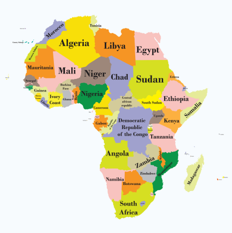
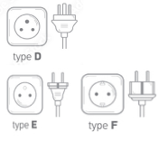
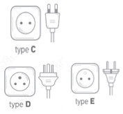
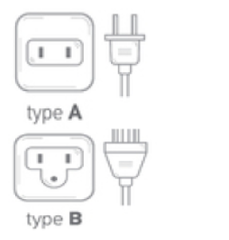
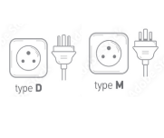

Afrika
Afrika is een divers continent met verschillende stopcontacten en spanningsvereisten, afhankelijk van het land.
De meest voorkomende stekkertypen zijn type C, dat vergelijkbaar is met de Europese standaard (twee ronde pinnen),
en type G, dat veel voorkomt in landen met een Britse koloniale geschiedenis, zoals Kenia, Ghana en Nigeria. Type G heeft
drie rechthoekige pinnen, vergelijkbaar met het Verenigd Koninkrijk. De netspanning in Afrika varieert meestal van 220V tot
240V, met een frequentie van 50Hz. Dit is vergelijkbaar met Europa, dus apparaten uit Europa kunnen vaak zonder omvormer
worden gebruikt, maar een stekkeradapter is wel noodzakelijk als het stopcontacttype anders is.


Zuid-Afrika
In Zuid-Afrika worden de type D, M & N stopcontacten gebruikt.

Chad
In Chad worden de type D, E & F stopcontacten gebruikt.

Egypte
In Egypte worden de type C & F stopcontacten gebruikt.

Marokko
In Marokko worden de type C & E stopcontacten gebruikt.

Congo
In Congo worden de type C, D & E stopcontacten gebruikt.

Liberia
In Liberia worden de type A & B stopcontacten gebruikt.

Somalië
In Somalië wordt het type C stopcontact gebruikt.

Sudan
In Sudan worden de type C & D stopcontacten gebruikt.

Nigeria
In Nigeria worden de type D & G stopcontacten gebruikt.
Angola
In Angola wordt het type C stopcontact gebruikt.

Madagaskar
In Madagaskar worden de type D & J stopcontacten gebruikt.

Namibia
In Namibia worden de type D & M stopcontacten gebruikt.